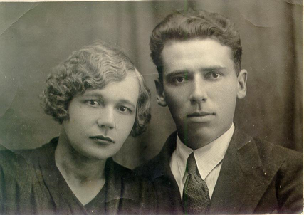
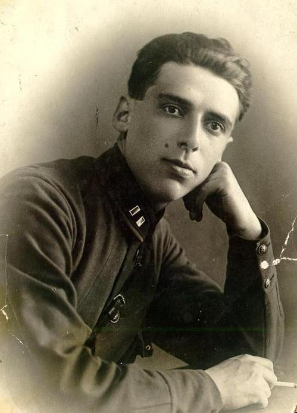
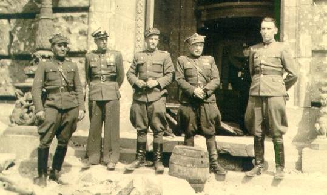
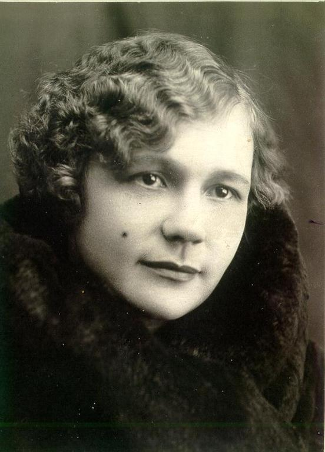
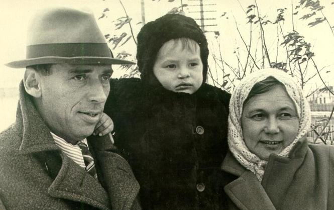
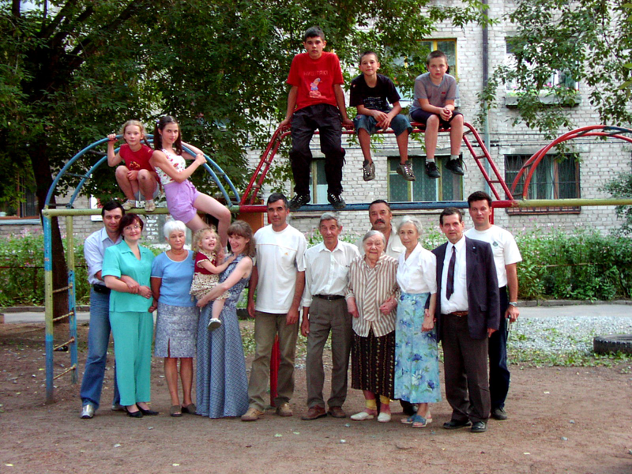
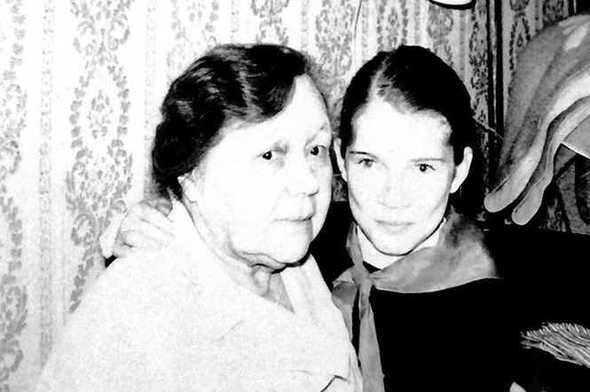

Когда я слышу комплимент, что у меня «золотые руки», я сразу вспоминаю свою бабушку Надю. Всему, что я умею и люблю, - шить, вязать крючком и спицами, готовить, учила меня она.
Когда мы переехали в Пермь к бабушке, мне было 10 лет. И до моих 14 мы жили в ее комнате в коммунальной квартире. Мама была все время на работе. Я очень хорошо помню это время, как я сначала дичилась бабули, как зимой через полгода после переезда она предложила перестать называть ее на "вы", как постепенно мы стали очень дружны. Она любила рассказывать, особенно, когда вязала (а вязала она всегда, когда не готовила), я с удовольствием слушала, и даже, подозреваю, есть какие-то вещи из жизни моей бабули, которые даже мама не знает. А еще мы очень с ней любили рассматривать фотоальбомы, и про каждую фотографию бабуля рассказывала много интересного.

Про это фото она рассказывала, что в один прекрасный день их с дедом квартиру ограбили. И на вопрос бабушки, - что делать будем?, дед сказал, - пойдем фотографироваться!
Бабуля родилась в 1914 году, рано осталась сиротой, и воспитывала ее тетка, которая сама была довольно юной, в общем, стала старшей сестрой фактически.
Бабуля рассказывала мне много. В отрочестве она влюбилась в мальчика-одноклассника, помнила о нем всю жизнь и с горечью признавалась, что поняла, что любит своего мужа (моего дедушку), только когда он уже умер.
Дед у меня был потрясающим красавцем, высоким брюнетом, увидел бабулю и влюбился с первого взгляда. Он тогда был чекистом, в кожанке, да на коне, но бабуля моя (надо сказать никакая не красавица, курносая, простенькая) его отбрила.
Так дед-таки ее добился, сделал предложение, проник в доверие к тете (которая, наверное, и рада была сбыть бабулю с рук) и женился.
Бабуля рассказывала, как происходило сватовство. Она мыла пол, было время обеда, видимо, тетя Вера должна была прийти на обед, пришел дед, пришлось усадить его за стол, и он съел ту тарелку борща, которая вообще-то предназначалась бабушке.
И помню прямо бабушкину интонацию, - заявился, мол, а я с грязной тряпкой и в подоткнутой юбке!

Бабуля рассказывала такие вещи интересные, - например, он не хотел брать жену силой в постели и некоторое время просто к ней не притрагивался, хотя спали они в одной кровати. Наладилось все быстро у них, он был очень обаятельным. И порядочность его, думаю, ее подкупила. Родилась первая дочка Инна. Бабуля говорила, что дед просто души в ней не чаял, любил безумно.
Потом вторая дочка - Эмма. А в 40 году - моя мама. Ее назвали Аллой (это идея деда, чтоб такие имена были), но все всю жизнь зовут Аленой.
В то время было еще одно знаменательное событие. Дед же был в НКВД, и в 38-м его друзья ночью предупредили, что его арестуют. Дед уехал той же ночью в другой город, куда-то в Казахстан, избежал тем самым репрессий, потом семья к нему приехала уже. Дед попал тогда не под списочные аресты (когда арестовывали по фамилиям), а под разнарядку арестовать столько-то. Повезло.
На войну он ушел солдатом, а закончил воевать майором, расписывался на стене Рейхстага.

В войну умерла их старшая дочка Инна. Она угорела от закрытой заслонки в печке. Бабуля работала, как и все на заводе. В горькие минуты бабуля говорила мне, что считает, что дед ее не так и не простил за Инночку.
Бабуля всю свою жизнь проработала бухгалтером. Дед после войны был уже начальником геологической партии. Бабуля работала бухгалтером у него, поэтому даже фамилию свою вернула прежнюю, чтоб в семейственности не обвиняли чужие люди. Бабуля рассказывала, что когда дед возвращался из командировок, он в поезде всегда надевал чистую белую рубашку и перед бабулей всегда появлялся с цветами, выбритый и свежий. А она очень гордилась всегда, что дед мог в любую минуту без всякого предупреждения привести друзей в дом, а у нее всегда была чистота и красота. И что-нибудь припрятанное к столу на такие непредвиденные случаи.
Помню, как меня раздражало в детстве, что каждое (!) утро бабуля делала влажную уборку в комнате, и неважно, как она при этом себя чувствовала. Теперь только я понимаю, что это была привычка всей жизни.
Про бабушкины привычки еще вспоминается: долго она отучала меня от вопроса, - Ты куда? В лучшем случае, она говорила сердито, - на Кудыкину гору, в худшем, - раздевалась и оставалась дома. И так забавно было поймать себя на том, что собственную дочку я так же отучала от этой привычки. Нельзя спрашивать КУДА, дороги не будет.

После войны у них родился еще сын, мой дядя. Родился с заячьей губой, ему делали операцию, сейчас ничего не заметно. Но меня на всю жизнь потрясло, как бабуля рассказывала, что когда ей показали сына, она испугалась. Володя - это бабулины переживания всю жизнь.

Бабуля прекрасно шила, рассказывала, что дед заваливал ее отрезами ткани, очень гордился тем, что она у него самая модная и прекрасная. А когда вышла на пенсию, почти перестала шить и увлеклась вязанием. Получалось у нее потрясающе и спицами, и крючком. Были постоянные заказы. Я была обвязана в детстве просто с ног до головы в буквальном смысле слова: и платья, и кофточки разные, и юбки, и шляпки. Крючком она вывязывала тонкие летние кофточки и салфетки из обыкновенных швейных ниток, у нее такой крючок был мелкий, что даже сразу и не разглядеть зацепку у него. А спицами она не только платья, но даже и пальто вязала, тогда было очень модно.
Кроме того, она научила меня мережке, пыталась научить прясть ( теперь жалею, что не освоила). А сколько ниток я перемотала за свое детство).
А еше бабуля совершенно потрясающе готовила. Пельмени дед мой съедал штук под триста под водочку, бабуля их лепила, как автомат, ровненькие, красивые и маленькие. Пирожки у нее были самые вкусные на свете))) а еще был фирменный торт Наполеон, который она делала из настоящего слоеного теста (когда мучная основа смешивается с масляной основой и бесконечно раскатываются), коржи раскатывала на столе до прозрачности. И это все стоило того, он просто таял во рту. Делала она такой торт за три дня до подачи на стол, и самое вкусное было - когда она обрезала краешки с уже готового торта, мы с Сашкой просто вокруг ходили и как коты облизывались.
Дедушка мой умер в 58 лет, когда мама был беременна мной, он последний год не вставал уже, у него был рак легких.
А бабуля пережила его на 36 лет, умерла в 92 года. Последние десять лет с ней жила мама моя, и жили они просто душа в душу. Мы старались приезжать в Пермь, есть фото, где дети, внуки и правнуки с бабулей - нас там просто огромная толпа.

Сейчас я все больше осознаю, что я – в бабушку Надю во многом. И это меня радует.

Инна Дворжицкая (Рогаткина)